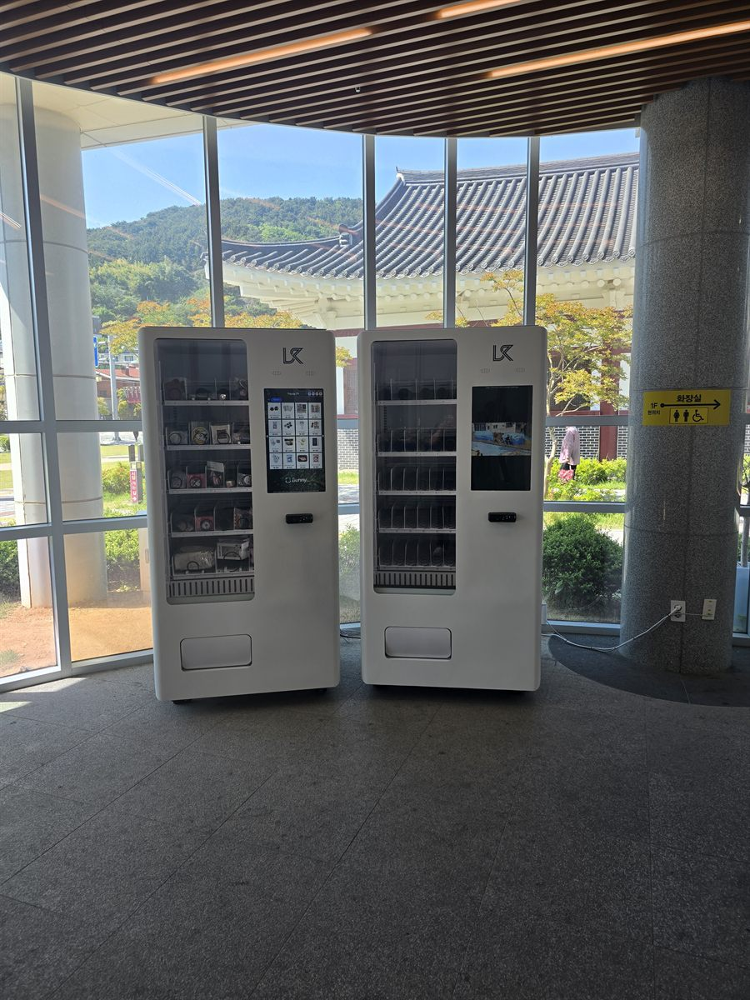

서대문구 무인자판기 설치
관공서 민원실 로비 자판기 2대

민원실은 사람이 지나가는 곳이 아니라 기다리는 곳입니다. 여기서 자판기가 팔리는 이유는 목이 말라서가 아니라, 번호표를 뽑고 나서 손이 비기 때문입니다. 그래서 다른 업종과 계산이 다릅니다. 통행량이 아무리 많아도 머무는 시간이 짧으면 안 나가고, 하루 방문객이 적어도 평균 대기가 길면 꾸준히 나갑니다. 이번 서대문구 현장에서 가장 먼저 확인한 것도 방문객 수가 아니라 대기 좌석이 몇 개인가 였습니다.
자리는 로비 한쪽 통유리 창가였습니다. 천장이 높고 바닥이 트여 있어 기계 두 대를 세워도 답답해 보이지 않고, 대기 좌석에서 고개만 돌리면 보이는 각도였습니다. 다만 창을 등지는 자리라 오후에 햇빛이 길게 들어오고, 청소 동선과 민원 대기 줄이 같은 바닥을 쓴다는 점이 변수였습니다.
서대문구 관공서 자리에 맞춘 구성
기종은 성격이 다른 두 대로 나눴습니다. 왼쪽 스마트 기종은 화면을 보고 고르는 방식이라 품목을 자주 바꿔도 안내가 따로 필요 없고, 오른쪽 냉장 기종은 버튼 조작이 단순해 어르신 민원인이 헤매지 않습니다. 관공서는 이용자 연령대가 한쪽으로 몰리지 않는 곳이라, 조작이 쉬운 기계를 한 대는 반드시 섞어 두는 편이 안전합니다.
품목은 따뜻한 음료와 생수를 축으로 잡았습니다. 앉아서 기다리는 자리에서는 탄산보다 커피·차 계열이 먼저 나갑니다. 여기에 생수를 넉넉히 두고, 간식은 소리가 크게 나지 않고 부스러기가 덜 떨어지는 개별 포장 위주로만 채웠습니다. 조용한 실내라 봉지 뜯는 소리 하나가 생각보다 크게 들립니다. 결제는 카드와 간편결제 중심으로 두었고, 재고와 내부 온도는 담당자 휴대폰에서 바로 확인합니다.
- 기종 — 스마트 기종 1대 + 조작이 단순한 냉장 기종 1대를 창가 벽면에 나란히
- 음료 — 커피·차 계열을 눈높이에, 생수를 가장 넉넉히
- 간식 — 소리·부스러기가 적은 개별 포장 위주, 종류는 적게
- 결제·관리 — 카드·간편결제, 재고와 온도 원격 확인, 현금함 없이 운영
로비에 두고 보니 좋았던 점과 아쉬운 점
좋았던 쪽은 관리가 단순하다는 것입니다. 문 여는 시간과 닫는 시간이 정해져 있어 야간 파손 걱정이 거의 없고, 로비가 매일 청소되는 공간이라 기계 주변이 지저분해지지 않습니다. 실내라 온도 변화가 작아 냉장기가 무리하게 돌지 않는 것도 장점이었습니다. 보충도 업무 시간에 맞춰 한 번 들르면 끝납니다.
아쉬운 점은 솔직히 말씀드리는 편이 낫겠습니다. 첫째, 주말과 공휴일은 거의 0입니다. 문을 닫으면 방문객이 없으니 한 달을 30일이 아니라 20일 남짓으로 잡고 계산해야 실제와 맞습니다. 둘째, 업무 시간 안에서도 오전에 몰리고 오후에는 조용해집니다. 하루 평균으로 보면 완만해 보여도 실제로는 앞쪽에 쏠립니다. 셋째, 창가 자리라 오후 햇빛이 화면에 반사되는 시간대가 있었습니다. 기계를 창과 나란히 붙이지 않고 각도를 살짝 틀어 두는 것으로 줄였습니다.
서대문구, 이런 자리가 잘 됩니다
서대문구는 대학가·주거지·공공시설이 층층이 겹쳐 있는 구입니다. 신촌동과 창천동, 대현동은 대학과 상권이 맞붙은 유동 구역이고, 홍제동과 홍은동은 주거지와 생활 상권이 넓게 퍼져 있습니다. 남가좌동·북가좌동은 아파트 단지와 학교가 많아 생활 동선이 일정하고, 충정로와 북아현동 쪽은 업무시설과 재개발 단지가 섞여 있습니다. 연희동은 주택가 골목 상권의 성격이 강합니다.
관공서가 아니어도 앉아서 기다리는 시간이 있고, 그 층에 매점이 없는 자리면 조건이 같습니다. 도서관 열람실 앞 로비, 보건소와 병원 대기실, 체육시설 접수 창구 앞이 그렇습니다. 반대로 대기 좌석 없이 서서 바로 처리하고 나가는 창구, 바로 옆에 카페가 붙어 있는 로비는 기대만큼 나오지 않습니다.
서대문구 서비스 지역
신촌동 · 연희동 · 홍제동 · 홍은동 · 남가좌동 · 북가좌동 · 충정로 · 북아현동 · 대현동 · 창천동 · 천연동 · 봉원동
서대문구 전역에서 방문 상담이 가능합니다. 맞닿은 마포구·은평구·종로구·중구도 같은 담당자가 함께 다닙니다. 지역별 안내는 서대문구 무인자판기 설치 안내 페이지에서 보실 수 있습니다.
서대문구 무인자판기, 이렇게 시작하시면 됩니다
전화나 상담 신청으로 건물 주소만 남겨 주시면 됩니다. 담당자가 나가서 벽면 길이, 대기 좌석에서 보이는 각도, 콘센트까지의 거리, 사람이 지나는 방향을 확인합니다. 로비라면 청소 동선과 비상 통로를 막지 않는지도 같이 봅니다. 기종과 품목을 정하고 설치일을 잡으면 끝이며, 설치비는 받지 않습니다. 기계는 구입·렌탈·임대 중에서 고르실 수 있어 초기 비용 없이 시작하셔도 됩니다.
대기 좌석이 거의 없거나 같은 층에 매점이 있는 구조라면 그 자리에서 솔직히 말씀드립니다. 관공서는 방문객 수보다 머무는 시간과 여는 날 수가 결과를 가르는 곳이라, 주말을 빼고 계산해 보시는 편이 정확합니다.
※ 사진은 픽프리가 시공한 설치 사례이며, 글에 적힌 지역의 현장 사진은 아닙니다.
함께 많이 찾는 키워드
서대문구 무인자판기 · 서대문구 자판기 설치 · 서대문구 자판기 임대 · 서대문구 자판기 렌탈 · 서울 무인자판기 · 서울 자판기 설치 · 신촌동 자판기 · 연희동 자판기 · 홍제동 자판기 · 홍은동 자판기 · 남가좌동 자판기 · 북가좌동 자판기 · 충정로 자판기 · 북아현동 자판기 · 대현동 자판기 · 창천동 자판기 · 천연동 자판기 · 관공서 자판기 · 민원실 자판기 · 로비 자판기 · 대기실 자판기 · 공공기관 자동판매기 · 냉장 자판기 · 커피 자판기 · 스낵 자판기 · 무인키오스크 설치 · 스마트 자판기 · 카드 자판기 · 자판기 설치비용 · 자판기 원격관리